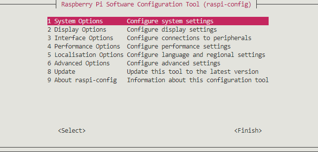

セットアップ
環境
- Raspberry Pi Zero
- Raspberry Pi Camera V2
- Raspberry Pi OS Lite
OS のセットアップ
Raspberry Pi Imager は Raspberry Pi OS のイメージを SD カードに簡単に書き込むことが出来るツールです。
micro SD カードに OS イメージを書き込む手順
- Raspberry Pi Imager をインストール。
- Raspberrry Pi Imager を起動。
- 「Raspberry Pi OS Lite (32bit)」を OS として選択.
- 書き込む SD カードを選択.
- 書き込む をクリック.

raspi-config によるシステム設定
raspi-config はシステム設定を対話的に行うことが出来る CLI ツールです。 raspi-config は以下のコマンドで実行できます（ルート権限で実行する必要があります）:
sudo raspi-config
すると以下のようなインターフェースが表示されます:

obcam を使用するためには、以下の設定が必要になります：
- WiFi 設定
- 「legacy camera support」を有効化
設定後の再起動
raspi-config での設定変更の多くは再起動を要求しますので、フライトカメラモードの実行前には再起動をしておく必要があります。
WiFi 設定
raspi-config インターフェース上で、
- System Options を選択。
- Wireless LAN を選択。
- 国/地域を選択 (e.g. JP Japan)。
- SSID を入力。
- パスワードを入力。
テザリング
スマートフォンによるテザリングは多くの場合 WiFi のアクセスポイント兼ルーターとしての良い選択の1つです。テザリングを利用する場合は、その SSID とパスワードを上記の設定時に入力してください。
「legacy camera support」の有効化
raspi-config インターフェース上で、
- Interface Options を選択。
- Legacy Camera を選択。
- Yes を選択。
- OK を選択。
Legacy camera support
Raspberrry Pi OS の最新版では libcamera を使ったカメラインターフェースが採用されており、以前から使われていたレガシーなカメラサポートは非推奨になっています。しかし Raspberry Pi Camera の制御のために obcam で使用している picamera という Python モジュールは、このレガシーなカメラインターフェースを使用しています。それが理由で「legacy camera support」を有効化する必要があります。
フライトカメラモードの簡単設定
この方法を用いると obcam のインストールおよびフライトカメラモードの有効化を同時に行うことが出来ます。この簡単設定はリポジトリ上 install.sh を実行することで行えます。詳細が気になる場合はこちらのセクションを参照してください。
まずは git clone を使用してリポジトリをダウンロードします（ネットワーク環境が必要です）：
git clone https://github.com/FROM-THE-EARTH/obcam.git
その後、簡単設定を行うことが出来ます：
cd obcam
sudo ./install.sh
これで obcam のフライトカメラモードの有効化は完了です。次に起動されるときからフライトカメラモードでプログラムが自動実行されます。
git のインストール
もし git がインストールされていなければ、以下のようにして git をインストール出来ます：
sudo apt update
sudo apt install git
obcam モジュールのみのインストール
obcam は pip を使用してインストール出来ます。
pip install git+https://github.com/FROM-THE-EARTH/obcam.git
インストール後、フライトカメラプログラムを実行する obcam コマンドが使用可能になります。
pip がインストールされていない場合
Raspberry Pi の最初の起動直後は pip がインストールされていない可能性があります。このような場合、以下の方法で pip をインストール出来ます。
- まずは
pipをインストールするためのスクリプトをダウンロードします。以下のコマンドの実行後、get-pip.pyというスクリプトがカレントディレクトリにダウンロードされます。wget https://bootstrap.pypa.io/get-pip.py get-pip.pyを実行します。python get-pip.py
フライトカメラモードの有効化
フライトカメラモードについて
フライトカメラモードでは、フライトカメラプログラムは Raspberrry Pi の起動時に自動実行されます。フライトカメラモードを有効化は、以下の手順で行えます：
gileum ファイルを書く
gileum ファイルはこのアプリケーションの設定ファイルのようなものです。glm.py は1つの gileum ファイルであり、フライトカメラモードの有効化前に設定しておく必要があります。glm.py はリポジトリ直下においてあり、ダウンロード後に上書きして利用できます。設定パラメータの詳細についてはこちらのページを参照してください。ただし、設定パラメーターはダウンロード時に最適な値に設定されているため、デバッグなどの理由がない限りパラメーターを変更する必要はありません。
フライトカメラモードのみの有効化
scripts/activate_flightcam.sh というスクリプトを使用すれば、フライトカメラモードのみを有効化できます。scripts/activate_flihgtcam.sh はリポジトリ上に置いてあります。
sudo ./scripts/activate_flightcam.sh
obcam のアップデート
obcam のみのアップデート
以下のコマンドで pip を使用してアップデートできます：
pip install --upgrade git+https://github.com/FROM-THE-EARTH/obcam.git
obcam のアップデートおよびフライトカメラモードの有効化
- ローカルリポジトリの削除：
rm -rf obcam/ - こちらのセクションにしたがって再度フライトカメラモードを有効化
フライトカメラモードの有効化の詳細
ここではフライトカメラモードの有効化のプロセスについて説明します。そのプロセス自体はそこまで複雑ではありません。ポイントは /etc/rc.local を設定するという点です。 /etc/rc.local はシェルスクリプトであり、OS の起動時に自動実行されるスクリプトです。
scripts/activate_flightcam.sh というスクリプトは /etc/rc.local に obcam プログラムを実行される以下の一行を挿入します:
# /etc/rc.local
# Some lines ...
/usr/bin/python -m obcam /usr/local/src/obcam/glm.py
exit 0
上のコードからわかるように、フライトカメラモードでは /usr/local/src/obcam/glm.py という scripts/activate_flightcam.sh が実行された際にコピーされた gileum ファイルを使用して実行されます。したがって、コピー前の gileum ファイルであるダウンロードしたリポジトリ下にある glm.py の内容を変更しても、フライトカメラモードの実行には影響がありません。もし gileum ファイルの内容を変更してフライトカメラモードを実行したい場合は、 /usr/local/src/obcam/glm.py を直接修正するか、リポジトリ下にある glm.py を /usr/local/src/obcam/glm.py に再度コピーしてください。